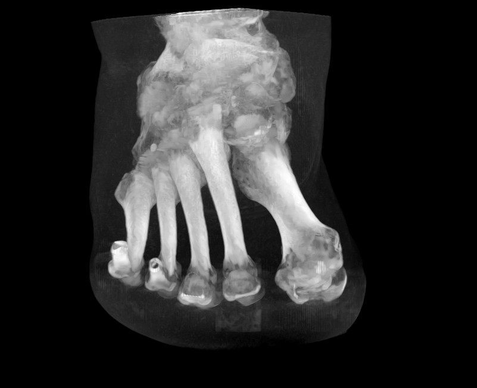
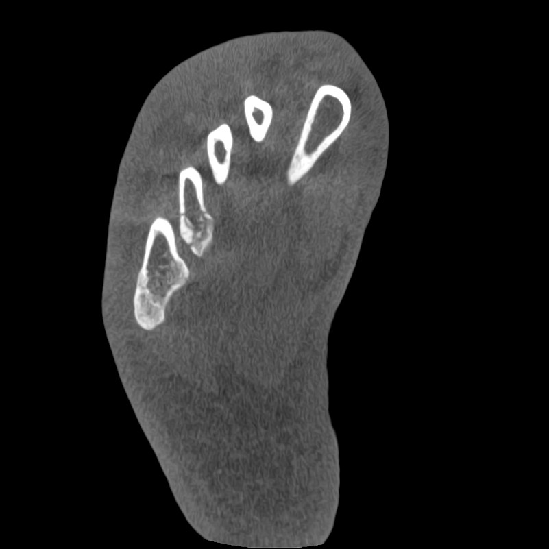
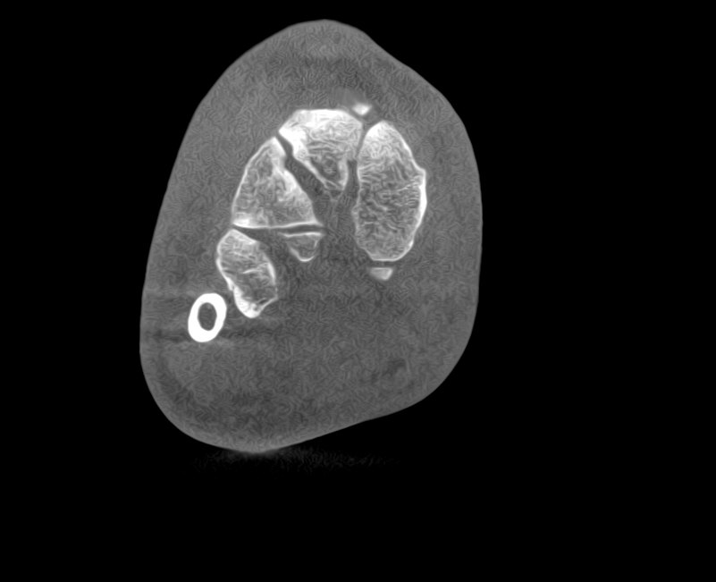
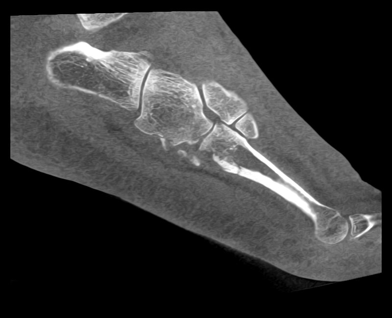

DVT / CT0,4-mm-WebrasterDemo-ROI
Testfall DVT_TEST_001
De-identifizierter Demonstrationsfall mit synchroner axialer, koronarer und sagittaler Navigation sowie interaktivem 3D-Knochenmodell.
Der Atlas verbindet klinischen Kontext, multiplanare Schichten und räumliche 3D-Orientierung. Jeder Fall führt in derselben Reihenfolge von der Fragestellung über die Bildgebung bis zur fachlich freigegebenen Entscheidung.

De-identifizierter Demonstrationsfall mit synchroner axialer, koronarer und sagittaler Navigation sowie interaktivem 3D-Knochenmodell.
Der Fall führt vom klinischen Kontext in eine synchronisierte multiplanare Ansicht und anschließend in die räumliche 3D-Orientierung.



Die klinische Ausgangslage wird im realen Atlas vom behandelnden Arzt ergänzt und vor Veröffentlichung freigegeben.
Alle drei Rekonstruktionen stammen aus demselben isotropen Volumen. Der gemeinsame Kreuzpunkt verbindet die anatomische Position über alle Ebenen und die 3D-Orientierung.
Die grüne ROI markiert ausschließlich eine didaktische Beispielposition am MPR-Kreuzpunkt X 275 / Y 331 / Z 335. Medizinische Lokalisation und Diagnose müssen vor Veröffentlichung ärztlich ergänzt und bestätigt werden.
Die Therapieentscheidung folgt erst nach Bildgebung und ärztlich freigegebenem Befund. So bleibt die klinische Argumentation nachvollziehbar.
| Format | Inhalt | Stärken | Einsatz |
|---|---|---|---|
| DICOM-Master.dcm · intern | 12-Bit-Pixel, Geometrie, Metadaten, 651 Frames | Echte Fensterung, Messungen, freie Rekonstruktionen und Planung | Geschützter diagnostischer Viewer |
| MPR-Webpaketgepackte .jpg + 3D-Mesh | 326 axiale sowie je 401 koronale und sagittale Bilder; jede zweite Originalschicht | Gesamter Aufnahmebereich in 0,4 mm, synchroner Kreuzpunkt und drehbares 3D | Bildatlas, Fortbildung und Präsentation |
| Druckformat.png / .tiff | Gezielt ausgewählte Schlüsselbilder aus allen Ebenen | Hohe Druckqualität und klare Befundmarkierung | Broschüre; QR-Code führt zur MPR-Webansicht |